New deliverables ✨
Boardspace
Empowering diners to discover dining options with tastebuds they trust.
Timeline
- December 2022 - June 2023
Tools
Understanding the problem
Initial project brief
Before we met with Boardspace, we received the following brief to conduct user testing on their poll feature with current and potential customers:
Objective
Gain redesign insights to enhance the user experience.
Goal
Improve user engagement and retention with intuitive design.
Limited time and resources called for creativity
Given the brief, we began our project by exploring the problem space. This was challenging due to constraints in time and resources. Without existing user research or direct access to users, we relied on a combination of secondary research, competitive analysis, and an in-depth conversation with the CEO, Pat Crosscombe. Pat shared valuable insights, including snippets of user feedback and personal anecdotes from her experience as a former non-profit board director.
Initial call with client—Pat Crosscombe, CEO
During our initial call, Pat introduced us to the board management space and BoardSpace’s value proposition:
- Horizontal tagging system for document organization to quickly locate documents
- Horizontal tagging system for document organization to quickly locate documents
- AWS for secure storage of sensitive information (e.g. financial records)
- AWS for secure storage of sensitive information (e.g. financial records)
One foundational principle for most Boards is that everyone should see what everyone else is doing on that Board—so, even if you’re not doing a task, you should be aware that it’s happening.
We also learned about the existing methods of achieving voting consensus and their challenges:
Method 1: Hand-raising
Traditionally, voting consensus is reached by show of hands.
Issue: Restricted by COVID-19.
Method 2: Email threads
Meetings are often organized through lengthy email threads.
Issue: Time-consuming.
I remember hearing people talk about the issues with voting in meetings, and since COVID, it’s more difficult to have candid (hand-raising) voting... I hate emails.
In sum, this is what we learned about user needs and values:
Transparency
Efficiency
These insights helped us better understand nonprofit board directors and administrators.
Since we didn't have the resources to conduct extensive user research, the insights we drew from this conversation were able to provide some guidance throughout the project!
Refining the brief given new insights
Given our exploration, we suggested revamping the feature and testing our prototype to maximize improvements, which Pat approved!
Defining the scope
To help us create our project scope and timeline, we conducted a design audit of the current poll feature and competitive analysis. This process revealed the strengths and weaknesses of BoardSpace's current design and helped us understand its value and potential!
First, we evaluated the existing poll feature with a design audit
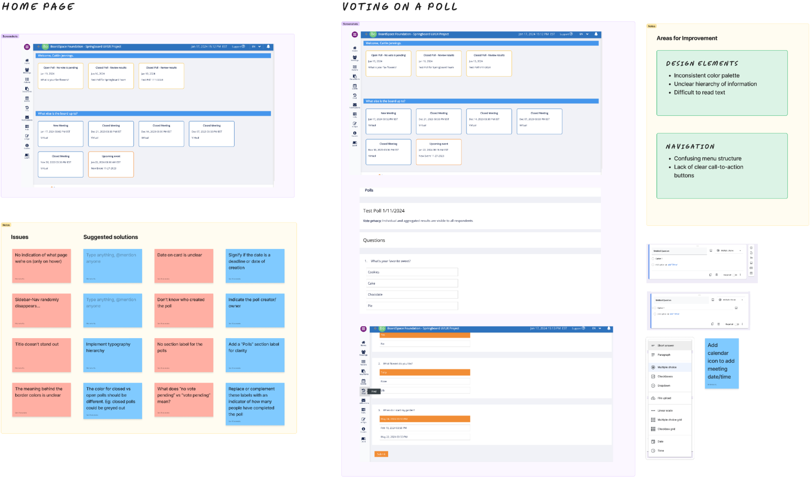- Navigated the critical user flows
- Documented our errors and challenges encountered
- Mapped out the user flows
This is what we learned:
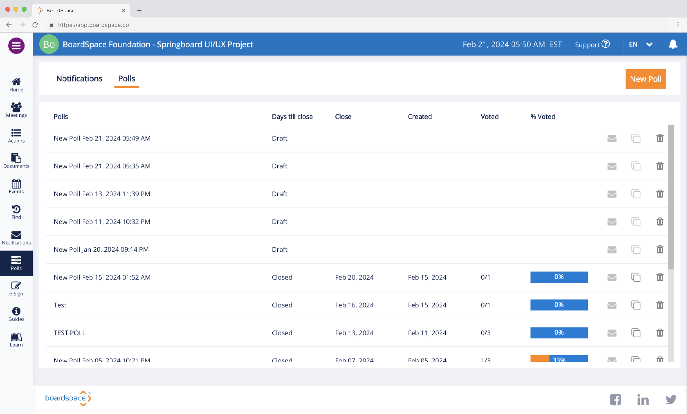
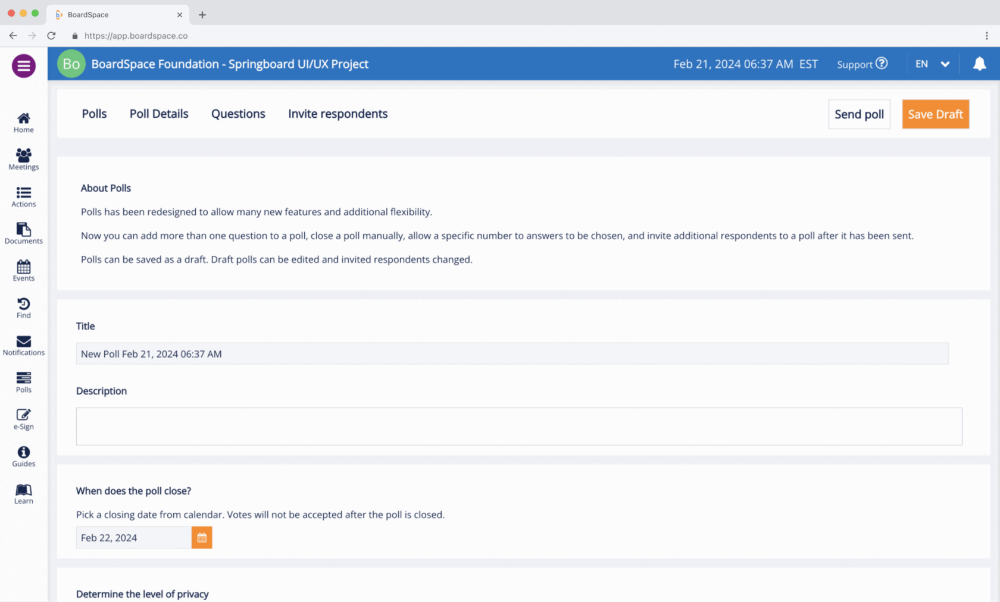
The polls home page presents a comprehensive list of polls: open, draft, and closed. It was difficult to scan or find polls without clear indicators, organization, and options to sort, filter, or search. We also couldn’t tell what we were supposed to do besides creating a new poll, as it’s the only clear CTA.
Violates heuristic guideline of accommodation to user preferences
Exploring solutions with competitive research
We found that the best practices include great flexibility, customization, a simple user flow, and a clean layout:
Survey Monkey
Google Forms
Notion
Conclusion
Throughout our design audit, we experienced significant cognitive overload and encountetext-red numerous errors, which we struggled to resolve. This was shaped by substantial gaps in information architecture and visual design. In summary, here are the usability heuristics that the current design did not meet:
Narrowing the scope
To define our project scope and timeline, we began to the problem space. First, we did To define our project scope and timeline, we began to the problem space. First, we did
Brainstorming new user flows
Drawing from our insights from our design audit and competitor analysis, we began brainstorming design solutions starting with new flows.
Objectives
Improvements we made
Legend
Route 1: Creating a poll
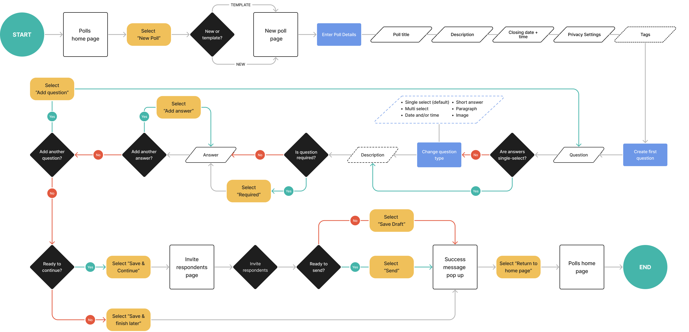Route 2: Vote on a poll
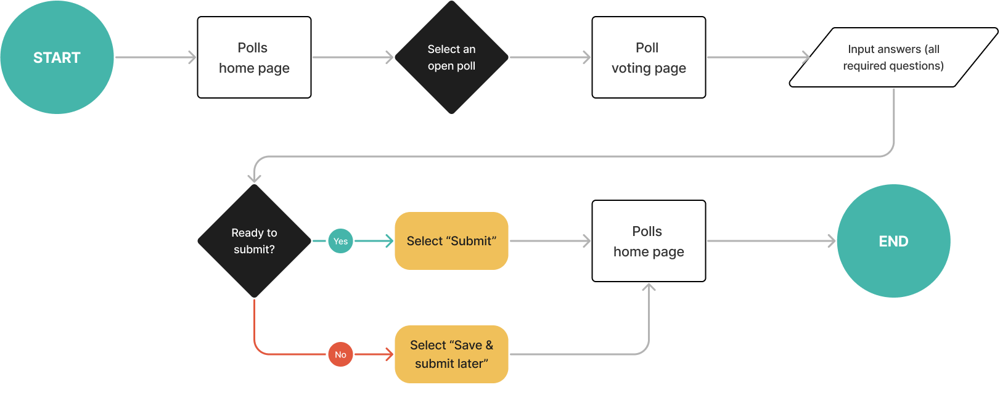Route 3: View poll results
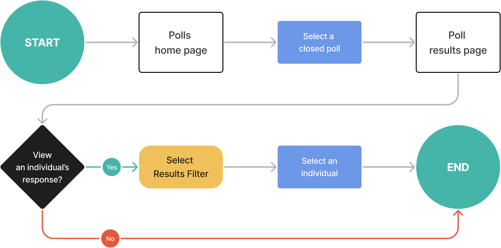Sketching
Using our new user flows, we proceeded to sketch new designs for each route. We each spent a day sketching our delegated screens, and I was tasked to sketch the home page.
Polls home page
My sketches prioritized the usability issues we identified in our design audit, which found the page disengaging and hard to scan. I sketched two different ways to view the board and two different information architecture, each with Call To Action (CTA) buttons and sort and filter options. To save time, I sketched a different information architecture strategy for each view.
Objectives
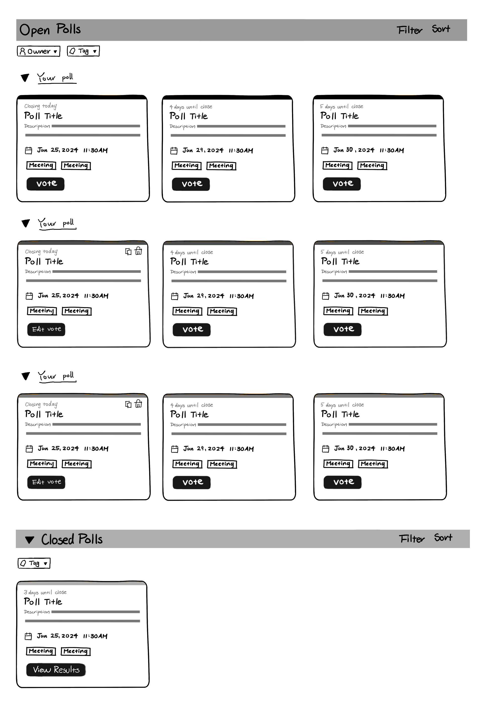
Board view
This IA organizes polls by their status (open/closed) and CTA. I added "tags" to integrate the feature into the horizontal tagging system. The top of each card is shaded differently across the subsections as a visual aid.
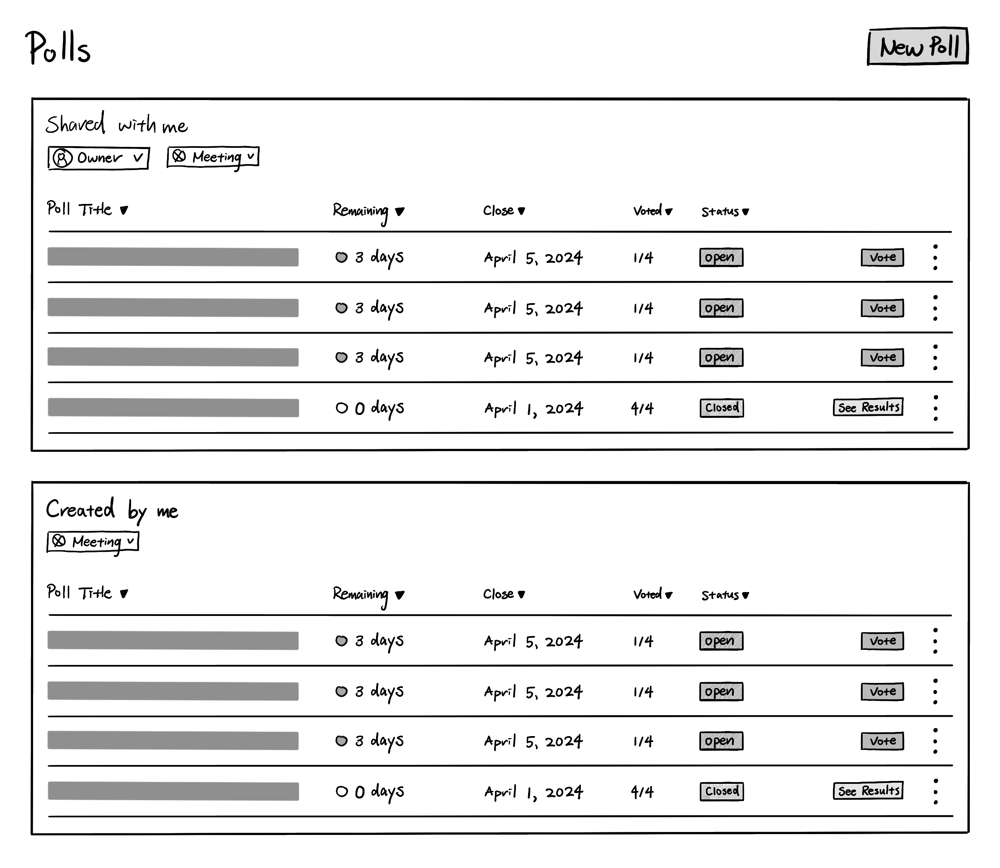
Table view
This prioritizes user roles and their access permissions because only the owner can edit a poll and view results of an open poll. The hierarchy is based on my speculation incoming polls need more attention. Other changes are a colotext-red chip based on urgency, one flex-column for votes, a status chip, label copy changes, and relocating buttons in an ellipses icon button.
All Sketches
Creating a poll
We added suggestions for questions. Instead of buttons to reorder questions, we implemented a drag interaction.
Viewing poll results
We added a way to view results as graphs.
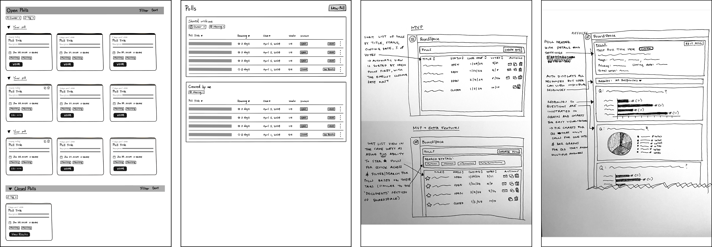
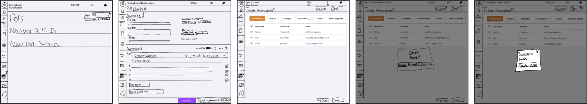
Design
Low-fidelity wireframes
This process was somewhat challenging because we faced several new, unexpected constraints. Scheduling a meeting with the developer proved difficult, which took place after we developed our wireframes. We learned there were limited handoff expectations and that the style guide was outdated, impacting the consistency of our designs. Learning about platform limitations and additional info about the poll feature at this meeting also set back our timeline.
Polls homepage
The only change I made was removing poll description from the board view.
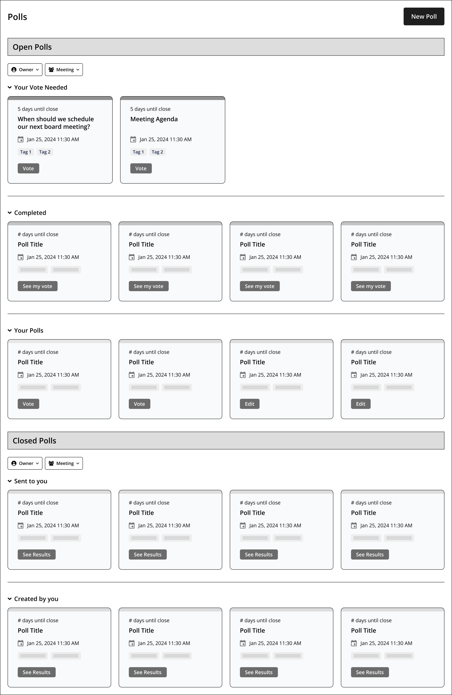
Polls home
page - Board view
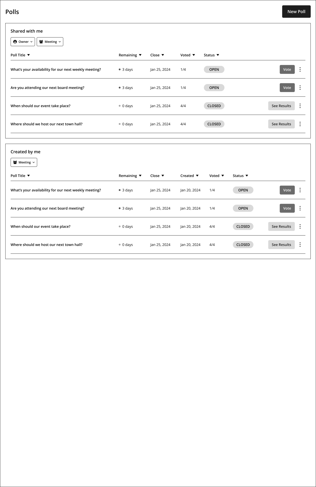
Polls home
page - Table view
All low-fidelity wireframes
Polls home
page - Board view
Polls home
page - Table view
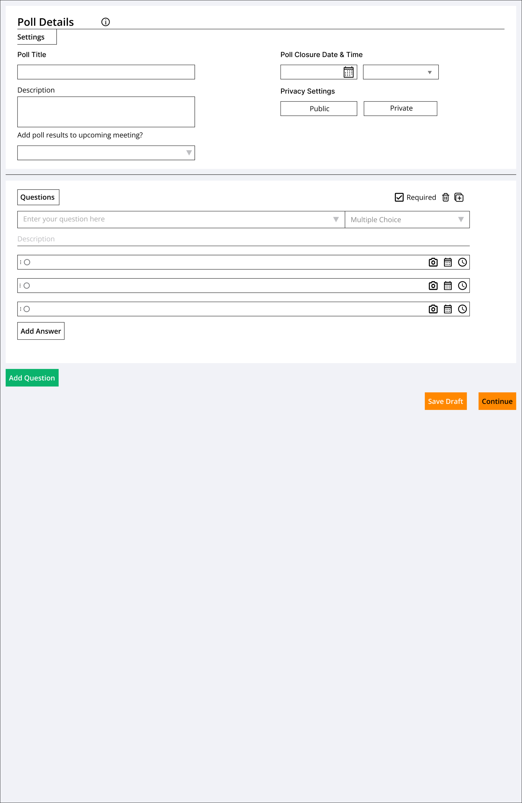
Creating a
new poll
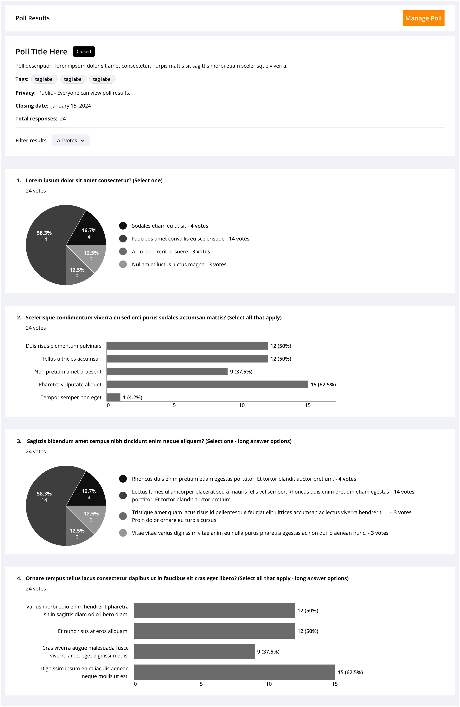
Poll results
Voting on a poll
We added the option to add poll results to an upcoming meeting's minutes, aiming to integrate the feature to the ecosystem and differentiate it from competitors, boosting competitive value.
Prototype
High-fidelity prototype
Adapting to client resistance
Polls home page
Before we created the high-fidelity prototype, we presented our low-fidelity wireframes to update our client on our design progress and gain feedback. For the most part, our client was happy with our designs. However, we faced some pushback for the polls home page.
Polls home page
Before we created the high-fidelity prototype, we presented our low-fidelity wireframes to update our client on our design progress and gain feedback. For the most part, our client was happy with our designs. However, we faced some pushback for the polls home page.
Gallery view
Our client pushed back on the gallery view, arguing that it’s too different from the rest of their pages. While I maintained that offering the flexibility can accommodate different visualization preferences among board directors, I omitted it from my designs. The ideas they pushed back on was displaying a gallery view and implementing the flex-column with the names of creators. They argued that it doesn’t matter who created the poll, that the most important information is their status.
However, while I was designing our high-fidelity wireframes, I proceeded to keep the flex-column because I felt that it was necessary to meet the heuristics of system status clarity, navigation, and user control and flexibility. My assumption was that due to how only the creator of a poll may edit their poll and email reminders to respondents, it’s necessary to display the information to ensure that it’s easy to scan the page and locate their poll.
Displaying the creator of the poll
Upon reviewing our low-fidelity designs, our client they pushed back on was displaying the creator of the poll. They argued that it doesn’t matter who created the poll, that the most important information is their status.
However, I kept the flex-column because I felt that it was necessary to meet the heuristics of system status clarity, navigation, and user control and flexibility. My assumption was that due to how only the creator of a poll may edit their poll and email reminders to respondents, it’s necessary to display the information to ensure that it’s easy to scan the page and locate their poll, especially since those buttons are now hidden within an ellipses icon button.
However, I did rearchitect the home page to simplify the organization and prioritize the critical information.
This process was somewhat challenging because we faced several new, unexpected constraints. Scheduling a meeting with the developer proved difficult, which took place after we developed our wireframes. We learned there were limited handoff expectations and that the style guide was outdated, impacting the consistency of our designs. Learning about platform limitations and additional info about the poll feature at this meeting also set back our timeline.
Polls home
page - Board view
Polls home
page - Table view
Creating a
new poll
Poll results